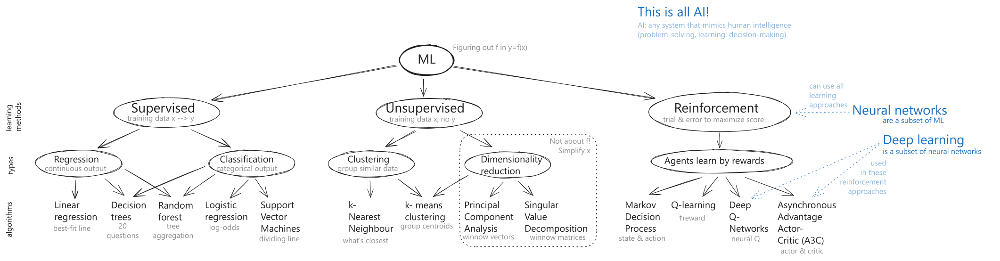
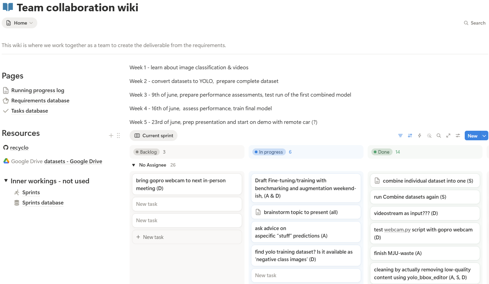

In 2025 AI hype was growing, and I realized I was holding opinions and fears about the technology without really understanding it. So I found a local bootcamp program focused on learning about AI and started studying up on neural networks.
First: the theory.
I started with this incredible YouTube video by Andrej Karpathy, a founding member of OpenAI and a fellow with an incredible talent for weaving a story that pulls you in and teaches you complex concepts.
After Karpathy’s intro, I tackled the series of Medium articles, Machine Learning for Humans, by Vishal and Samer. Inspired by Karpathy, I synthesized the key concepts into an Excalidraw info map.

Next was the fastai lecture series by Jeremy Howard, Practical Deep Learning for Coders. I was in the middle of the first lecture, learning about how to train a fastai text classifier on an IMDb sentiment dataset for the purpose of classifying the sentiment of a given sentence, when a friend interrupted me to show me a funny Key & Peele skit. So I opened up a Colab Notebook and got to work – how could I not?
After two months of theory we moved into the project phase of the program. In a team of four people we trained a machine learning image recognition model to recognize garbage using YOLO, with the overall concept of using this model in a robot that would pick up trash around a city.
The team had a range of coding skills, from totally new to Python and coding in general to working with code every day. It was interesting to find myself in more of a mentor role in the group. I created a notion project management space, to help direct team focus on things like problem definition, documentation and resource sharing, task planning via a Kanban board setup. And I made a deliberate mindset shift away from creating the perfect product to focusing on interacting with teammates (providing feedback etc) with the goal of helping them grow as programmers. Of course I made solid contributions to the project codebase too!

At the end of the program, all the participating teams gave a 10 minute presentation on their project. Here's our presentation; it includes a short video of the trained model in action, recognizing garbage and cars and frisbees (so many "frisbees") out on the street. In the end our team took first place out of the ~15 project teams, earning bragging rights and a copy each of the book Switch: How to Change Things When Change Is Hard, by Chip & Dan Heath. I attribute our success to the way we used the presentation to tell a fun and engaging story underpinned by use of a fascinating technology.
We even made our audience laugh when telling them how we accidentally created “Tinder for trash” along the project journey, a helper application where we could go through the images in the training sets and quickly swipe left if they were “bad” training images (mislabelled, or unclear) or right if they were “good”. “And unlike Tinder, with this app if you don’t like what you can see, you have the power to change your potential matches to suit you better!” – I had programmed in an easy edit mode so you could adjust the box around the trash portion if it was simply not in the right location on a perfectly good picture.
Take note, Tinder devs!